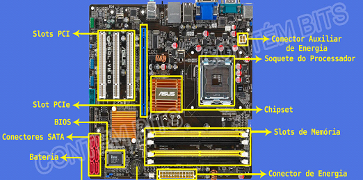

Placa mãe do Computador
O que é a placa-mãe de um computador?
A placa-mãe nada mais é do que uma central de comunicação. É nela que são conectados todos os componentes do PC necessários para que uma máquina funcione. Os pentes de memória, a placa de vídeo, a fonte de energia, o processador, o HD, o SSD e as placas de rede, todos têm o seu lugar definido para se conectarem à placa-mãe.
Como funciona? Além de servir de base para que os componentes de hardware sejam instalados e conversem entre si, a placa-mãe também costuma carregar diversos recursos. Alguns modelos oferecem, por exemplo, saída de vídeo. Nestes casos, a placa possui um processador gráfico embutido, ou usa as capacidades gráficas do processador da máquina. É o conjunto dessas unidades que determina o desempenho de uma GPU. É por isso que, muitas vezes, comprar uma placa pela quantidade de memória que ela oferece pode ser praticamente inútil. Uma placa com 3 GB de RAM pode ter um desempenho consideravelmente inferior a um modelo que tenha 1 GB, desde que a GPU da versão de menos memória tenha suporte a tecnologias mais avançadas, por exemplo


Computação em nuvem?
Os principais provedores globais de nuvem pública hoje, são a Amazon AWS, Microsoft Azure IBM e Google.

Nova Tecnologia
Utilizada pela Silicon Quantum Computing Pty Limited e deverão ser usadas para a criação e comercialização de computadores quânticos em larga escala.

O que é nanotecnologia?
Entendimento e controle da matéria em nanoescala. Ela atua no desenvolvimento de materiais e componentes para diversas áreas.